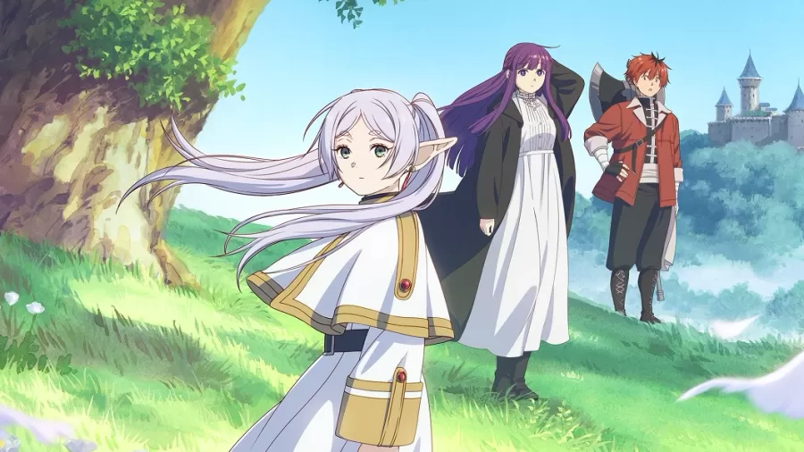

O fenômeno 'Frieren': como uma elfa introspectiva conquistou os otakus

“A Casa do Dragão”: veja quais dragões estão de cada lado na guerra
“A Casa do Dragão”: veja quais dragões estão de cada lado na guerra